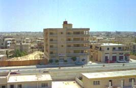

 早速キャンプ（宿舎:写真中央ビル１階）の食堂で昼 食となった。天上が２階位の高さになっている。料理が何であったが思い出せないが、ハエが多いことだけ は覚えている。日本人ならハエが止まったところを食べない様な気がするが、そんな事をしたら食べる所が なくなってしまう。ハエも日本のハエの大きさの２倍はある大きい物である。食事中、ジジジジ・バチ、ジ ジジジ・バチ、と時々聞こえる。何かと思って音の方をすると、ハエの捕集機がありそこにハエが入り込む と電気の火花で焼き殺す音であった。友人とアレキサンドリア市内を食料品調達方法で探索していた。大通りの裏に屋台が沢山出ていて野菜、 果物、香辛料等様々売っている。道路の中央に野菜くずなどがあり、近くを通るとワーと黒い物が大量に舞 い上がる。蠅である。友人が盛んにエジプト人や町の悪口を言っていた矢先である。突然友人が口をもごも ごさせ始めた。他の者たちは驚いて、どうしたのか心配し様子を見ていた。彼は下を向いて口から何かを吐 き出そうと始め、ようやく出した。黒い物がある、蠅であった。皆から悪口をいうから罰が当たったと言わ れてしまった。 赴任後、時々社内の喫茶からコーヒーを運んで貰う。ここのコーヒーはいわゆるトルココーヒーであるの で豆の粉がろかされていない。そのまま直ぐに飲むと一緒に豆の粉まで飲んでしまい、慣れないと飲めない 物があるのと、熱いので直ぐに飲めない為にしばらく静地する。コップもガラスコップで持つところはない。 現地の人はデミタスカップ位の量を飲むが、少なすぎて飲んだ気がしないので２倍入れて貰う。「ダブルア ホワ、ソッカ・ショワイヤ」と何時も注文する。「コーヒー２杯分で砂糖を少なくしてくれ」の意味である。 ちなみに誰かが教えてくれたが、このソッカが日本に伝わりなまって砂糖になったと教えてくれた、真実は 確かめていない。 何時もの様にコーヒーを静地して、コーヒーを飲もうとした。ハエは１匹私の周りを飛んでいたが、少し は慣れていた。飲もうとしてコップを口に近づけた瞬間ハエが私の鼻にぶつかり、その反動でコーヒーの中に入ってしまった。そ してハエはコーヒーの中で美味しそうに泳いでいた。思わず「ここはプールじゃねーぞ」とつぶやいていた。 顔にぶつかって入ったのはこれ１回だけであるが、飲もうとしたら既に泳ぎ疲れ溺れて居ることは度々あった。 兎に角ハエは多く、顔の周りにまとわりつくし臭う方に飛んでいくので、近くにエジプト人が居るとそちら に集まりやすい（オースオラリア人も同じであった）。彼らが居ないと仕方なく我々日本人にすり寄ってくる 、来なくて良いのに。ある時仕事をしていて書き物をしていた、ハエが顔の周りを飛び回る。少し我慢してい たがうるさい、右手で追い払っていた。ハエがその時私の鼻の近くにニアミスをしてくれた。右手で思わず振 り払ったとたん、シャープペンシルの先が鼻に当たってしまった。イ、イテェ―――！ 次の瞬間、思わず立 ち上がり、蠅叩きをもって事務所の中を追いかけていた。遠くで日本人部長が怪訝な顔をしてこの様を見ていた。 シナイ半島に数人で旅行に出かけた。砂漠地帯であるのでサンドフライという特殊な蠅がいる。日本のよう に小さい蠅である。周りは日本人ばかりで現地人がいない、となると必然的に蠅は日本人の周りに寄ってくる。 熱いので半ズボンをはいているので、足の方に寄ってくる。止まった瞬間痛みが走る、ウォ――― イ、イ、 イテェ――― この蠅噛みやがった。それからは皆全員振り払うのに必死の形相になり、車に乗り込んだ。 蠅との戦いはしばらく続いた。帰国する頃には何となく少なくなってきた感じがした。いや、慣れて気が付 かなくなっただけかも？。 参考情報：テレビである時レポーターが「ご覧下さい、飢餓のために子供達は顔にたかる蠅を追い払う力も ありません」と報じていた。これは半分ほんとで残り半分は認識不足である。飢餓のために追い払う力もでないは 本当である。ただ、彼らは慣れてしまって、追い払う習慣が無いのである。現に付き合っていたエジプト人達は 、ほぼ全員会話中など蠅が目、口に止まっても追い払う事を滅多にしない。気にしないのが本当だろうと思う。 口の中に多少入り込んでも気にしないのである。又蠅は砂漠の中からわき出る感じがするので、日本のように 不衛生の代表ではないように思えた。 |